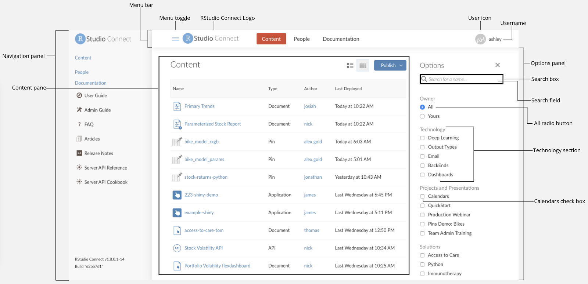

Documentation rules
Best Practices
Consistency & shared vocabulary Utilize this guide to help our documentation become consistent and to assist our teams to write with a unified voice.
Avoid Duplication
If possible, avoid duplicating documentation. If you need to reuse information:
- Use language that may not need to be updated frequently and add a link to the full documentation
- Use cross-references & links
- Use snippets
Readability
Be direct and avoid fluff. Keep our documentation transparent, easy to read, efficient, and search-friendly. Keep the topics and sentences simple, short, and concise. Do not write over our audience’s head or write drastically under it.
Test its readability here: Readability Test Tool
Accessibility
We should aspire to provide documentation that is helpful and easy for everyone to use. When planning, writing, and reviewing documentation, take the time to consider that someone may be using a screen reader to listen to our documentation. For example, ensure that you are writing documentation that is clear and isn’t relying on images to explain an action.
Please review our Product Accessibility in a Nutshell documentation.
Authentic
Claims should capture what our products and company can, and cannot do. We do not want to make false promises to our customers and there is no need to state that we may support something in the future. We are supporters of the open-source community and have an interdependent relationship with the open source community.
Doc template
Follow a general template to help standardize our documentation.
See topic structure/template.
Content placement
- Insert new content in the most logical or intuitive section of the guide.
- Do not just “stick it at the bottom”.
Naming conventions
Inconsistent names for the same object may confuse our users. Use consistent names whenever you:
- Introduce a new feature.
- Refer to an existing feature.
- Refer to a specific UI item.
- Update existing documentation.
Be sure to search ALL of our documentation to ensure that your product/menu/UI naming is consistent. The Product names and open source product names reference is shown below.
UI elements

Package names
When you refer to a specific package in R, use the actual capitalization of the package name (which is usually lowercase, but not always). Follow this rule even if the package name appears at the beginning of a sentence. Why? Because the package name is actual code that the user may type into R; incorrect capitalization could cause an error. Example: ggvis or ggplot2.
When you describe a general product/framework that RStudio has developed, like Shiny or R Markdown, use the RStudio capitalization of the product name. It does get tricky, but here is a heuristic: if you are praising a product to a general audience, go with R Markdown; if you are instructing programmers on how to do something, go with rmarkdown.